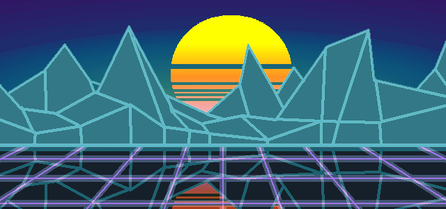

Cidade Gemini
Bem vindo a esse projeto da imersão Alura Gemini!
O gato ali embaixo é o agente 20-xx8. A ideia original era que, quando o comando pesquisdo fosse o esperado
Ele realzasse alguma ação. Infelizmente isso está acima do escopo possível dado o tempo da imersão.
Temos então esse site interativo onde as palavras certas farão com que o diálogo seja diferente e o link mostre um card colecionavel.
Esses cards mesmo poderiam ser criados via javascript, mas assim é mais rápido.